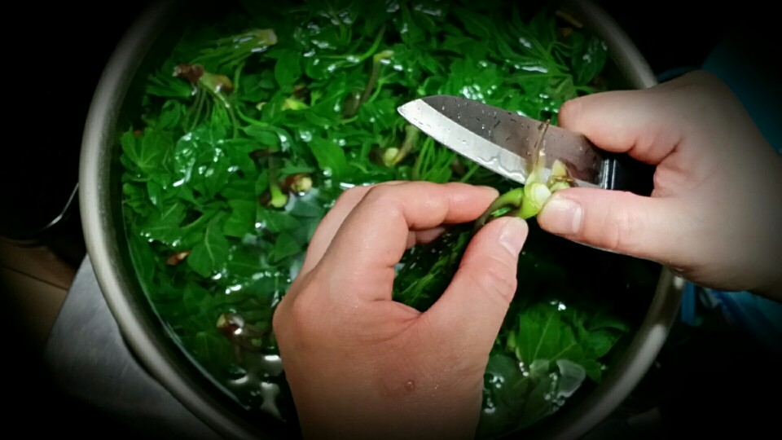
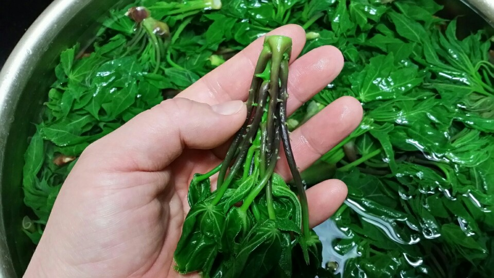
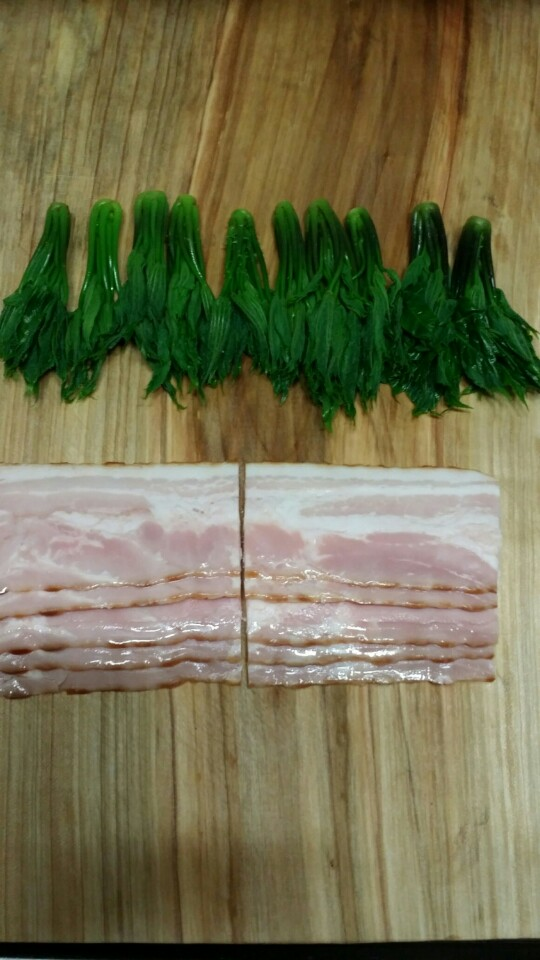
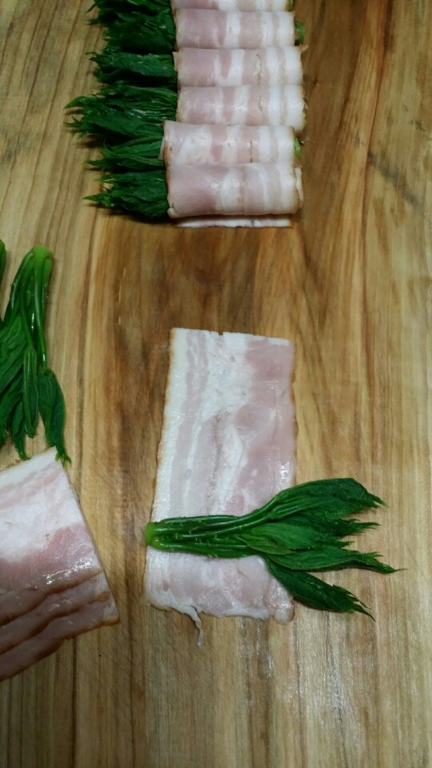
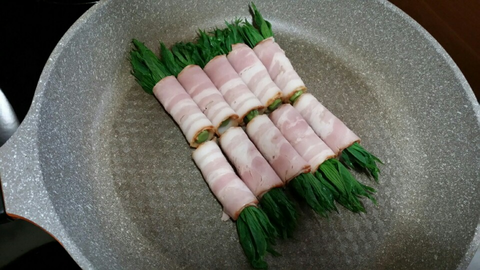
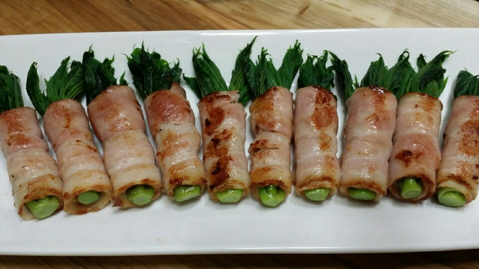

Ingredients
주 재료
- 엄나무순(개두릅)10개
- 베이컨5개
- 소금조금
Steps
- 개두릅(엄나무순)은 끓는물에 소금 조금 넣고 데쳐서 찬물에 헹구어 꼭지부분을 칼로 깨끗이 다듬어줍니다

- 깨끗하게 손질한 개두릅은 물기를 꼭 짜서 준비합니다

- 베이컨은 반으로 잘라 준비합니다

- 베이컨에 개두릅을 하나씩 놓고 말아줍니다

- 달구어진 팬에 겹쳐진 부분이 아래로 가게 두고 굽다가 돌려가며 노릇하게 구워줍니다

- 접시에 담아줍니다
